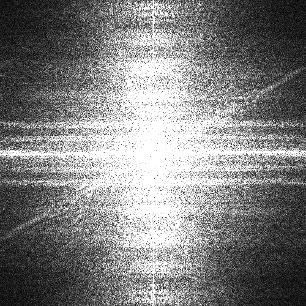

Name: Brandon Jiaxuan Yang
Student No: 301558726
Date: Sep 27, 2024
I have not cheated in any way when doing this assignment, I did it on my own. I may have asked questions about the assignment on Coursys, I know that’s totally fine and even encouraged. I also already know that this class is graded on a curve. I realize that if I cheat and by some miracle not get caught, any increase in my grade will in turn shift the curve and result in lower grades for my classmates. Any undeserved extra grade would come at the cost of all others. That’s horrible! I would never do it.
Frequency representations are divided by 50
Frequency representations are divided by 20
Frequency representations are divided by 50
Frequency representations are divided by 50
In high frequency image, Spatial Domain: Buildings begin to have jagged edges and the image becomes blurry; Frequency Domain: Some high frequency components are corrupted, mainly in the four corners.
In low frequency image, Spatial Domain: No explicit changes happened compared to the original image, Frequency Domain: Frequency image slightly darkened, as low frequency images have less high frequency content that could cause aliasing.
Frequency representations are divided by 50
In high frequency image, Spatial Domain: The aliasing artifacts are more pronounced to buildings, with even more jagged or distorted patterns. Frequency Domain: More high frequency components are corrupted, the image are much darkened compared to the original one.
In low frequency image, Spatial Domain: The image still hasn't changed much, except that the puppy's fur has become slightly blurred. Frequency Domain: Apart from a small loss of high frequency information the image presents no major problems.
Frequency representations are divided by 50
I used a 4x4 gaussian with a standard deviation of 0.7 for half of HP, and a 6x6 gaussian with a standard deviation of 0.9 for quarter of HP.
These two sets of Gaussian kernels can achieve the best balance between anti-aliasing and preserving image details.
Compare their frequency images of filtered to their unfiltered images, we can tell we got rid of some high frequency details and this should yield less aliasing in the image.


I chose 1.4 times of low threshold and 0.8 times of high threshold of matlab default values for this image, and the value is [0.1487, 0.2125], relative high low threshold can filter some unecessary noises and a low high threshold for high frequency image can caputure more details such like windows of the building, curved road on the ground.


I chose 1.5 times of low threshold and 3.0 times of high threshold of matlab default values for this image, and the value is [0.0469, 0.2344], which can filter many noises in the image and keep the shape of the tile texture and the dog. Although there still exist some noises, if we keep increasing high threshold we will start lose some details of the dog.